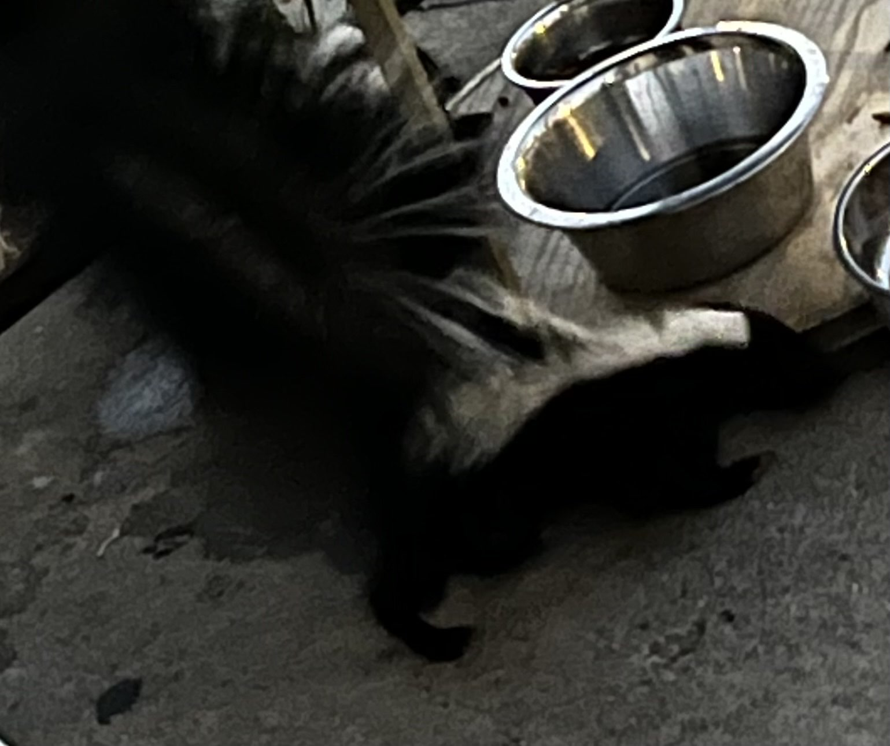
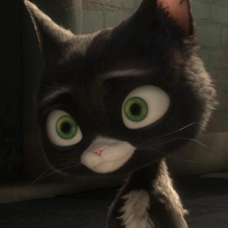
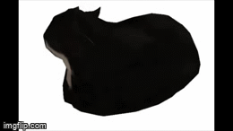

CAUTION: there has been recent reports of false Jerrys in the world here are some sightings that you should be aware of!:

We feed some outside cats but this action draws in neighborhood skunks and sometimes when i leave the house at night the skurring of these creatures remind me of jerry and i get a heartattack(I hate this neighborhood)

"Bolt" was one of my favorite movies as a kid and i always get reminded of jerry when i see the cat from that movie

This is maxwell a internet cat sensation and is known for his icon microwave spin gif and another enemy of jerry many mistake this impostor for the true cat king jerry